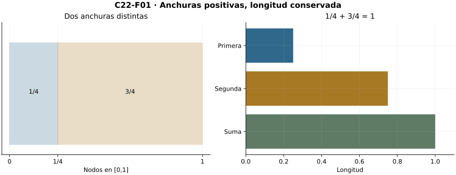
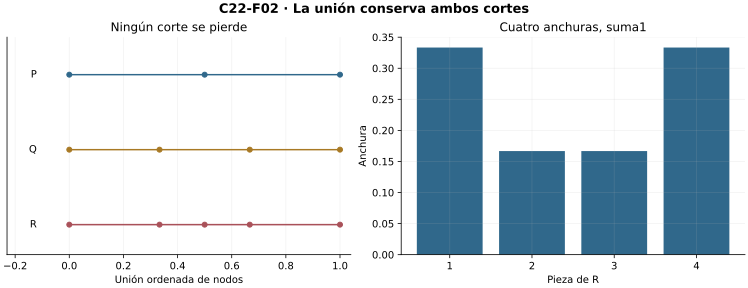
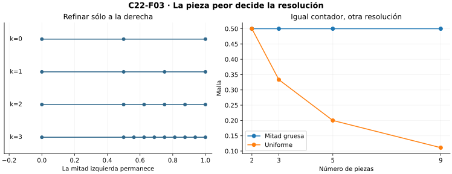
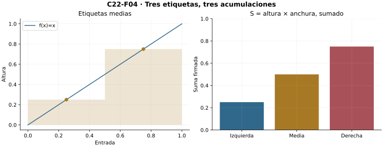
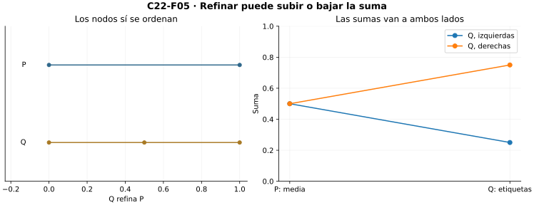
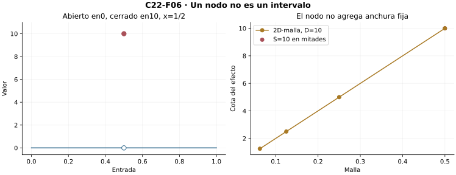
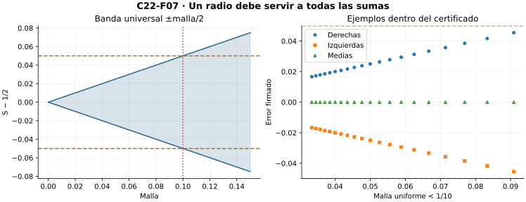
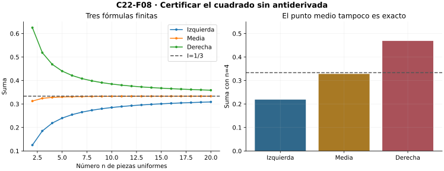

Capítulo 22 — Partir, refinar, acumular
Índice del libro · Ejercicios de este capítulo
La integral elemental sugiere acumular alturas sobre anchuras. Aquí construimos los datos finitos y el control que permitirán convertir esa intuición en un número estable. Separamos cortes, resolución y elecciones de etiquetas; ninguna figura ni antiderivada proporciona por sí sola el límite.
C01–C03 aportan naturales, orden real y arquimedianidad; funciones, inducción y sumas finitas son interfaces heredadas. La integral elemental externa motiva y no se usa para demostrar. C23 reserva Darboux y sus equivalencias; C24 el teorema fundamental.
22.1. Un intervalo convertido en datos finitos
Fijemos reales \(a<b\). Una partición es una lista finita estrictamente creciente
\[P=(x_0,\ldots,x_n),\qquad a=x_0<x_1<\cdots<x_n=b,\quad n\ge1.\]
La lista representa una función tipada del segmento natural \(\{0,\ldots,n\}\) a \([a,b]\), junto con su longitud. El índice es natural, el nodo y la anchura son reales. La colección de tales objetos es un conjunto: sus grafos viven en el conjunto potencia de \(\mathbb N\times[a,b]\); separar los grafos tipados y las listas que cumplen las condiciones da las particiones. Es no vacía porque \((a,b)\) es una partición.
Para \(1\le i\le n\), llamamos \(I_i=[x_{i-1},x_i]\) y \(\Delta_i=x_i-x_{i-1}>0\). La inducción que añade una diferencia al final prueba la telescopía
\[\sum_{i=1}^n\Delta_i=b-a.\]
En el paso, \((x_n-a)+(x_{n+1}-x_n)=x_{n+1}-a\); no hay suma infinita. Además, estos intervalos cubren \([a,b]\). Si \(t<b\), el menor índice \(j\) con \(t<x_j\) existe en un conjunto natural finito no vacío; entonces \(x_{j-1}\le t<x_j\). Si \(t=b\), usamos el último intervalo. Dos interiores distintos son disjuntos; intervalos consecutivos comparten un nodo. No llamamos disjuntos a los intervalos cerrados.
Para una representación como piezas disjuntas se puede usar \([a,x_1]\) y \((x_{i-1},x_i]\) para \(i\ge2\). Más adelante distinguiremos el reparto de nodos de la longitud de las piezas. En \([0,1]\), la lista \((0,1/4,1)\) tiene anchuras \(1/4,3/4\), no dos partes iguales.
La longitud \(b-a\) es un dato algebraico demostrado. Un dibujo de rectángulos ayuda a reconocerla, pero aquí no presupone una noción de área para regiones curvas. Los intervalos degenerados y la orientación inversa quedan fuera de este contrato inicial.

Microcontroles
Microcontrol 1
¿Qué datos exige una partición de \([a,b]\)?
Ver solución del microcontrol 1
Una lista finita estrictamente creciente con primer nodo \(a\), último \(b\) y al menos una pieza, bajo \(a<b\).
Microcontrol 2
¿Son reales los índices?
Ver solución del microcontrol 2
No: son naturales. Los nodos y las anchuras son reales; cuando se multiplica por un índice se usa su copia real.
Microcontrol 3
¿Por qué una anchura es positiva?
Ver solución del microcontrol 3
Porque \(x_{i-1}<x_i\), por lo que \(x_i-x_{i-1}>0\).
Microcontrol 4
¿Cuánto suman las anchuras?
Ver solución del microcontrol 4
\(b-a\), por telescopía finita: cada nodo interior aparece una vez positivo y otra negativo.
Microcontrol 5
¿Son disjuntos los intervalos cerrados vecinos?
Ver solución del microcontrol 5
No: comparten su nodo. Sus interiores sí son disjuntos.
Microcontrol 6
¿Cómo se localiza una entrada \(t<b\)?
Ver solución del microcontrol 6
Con el menor \(j\) que cumple \(t<x_j\); entonces \(x_{j-1}\le t<x_j\).
Microcontrol 7
¿Cuáles son las anchuras de \((0,1/4,1)\)?
Ver solución del microcontrol 7
\(1/4\) y \(3/4\); suman1 y no son iguales.
Microcontrol 8
¿Admite el contrato inicial \(a=b\)?
Ver solución del microcontrol 8
No. Exige \(a<b\); una convención degenerada se debe declarar separadamente.
Ejercicios de la sección 22.1
Ejercicio 1. Lista o dibujo
Decide cuáles de \((0,1/2,1)\), \((0,1/2,1/2,1)\) y \((0,3/4,1/4,1)\) son particiones de \([0,1]\).
Ver solución del ejercicio 1
Sólo la primera: conserva extremos y tiene comparaciones estrictas. La segunda repite un nodo, por lo que hay anchura cero; la tercera disminuye de3/4 a1/4. Un dibujo con varios cortes no corrige esas fallas.
Ejercicio 2. Longitudes que telescopan
Calcula anchuras de \(P=(-1,-1/4,1/2,2)\) y demuestra la suma general por inducción.
Ver solución del ejercicio 2
Son3/4,3/4,3/2; suman3=2−(−1). Para una pieza la identidad es \(x_1-x_0\). Si vale para \(r\) piezas, añadir \(x_{r+1}-x_r\) da \((x_r-x_0)+(x_{r+1}-x_r)=x_{r+1}-x_0\), que prueba el paso.
Retorno visual. Véase C22-F01, después del argumento completo: la figura permite reconocer el mecanismo y no sustituye la prueba.
Ejercicio 3. Una entrada en su pieza
Para la partición del ejercicio anterior localiza \(t=0\) y \(t=2\); demuestra la cobertura general.
Ver solución del ejercicio 3
Cero pertenece a \([-1/4,1/2]\) y2 al último intervalo. En general, si \(t<b\), el menor \(j\) con \(t<x_j\) existe pues \(n\) pertenece; no es0 porque \(t\ge a\). La minimalidad da \(x_{j-1}\le t<x_j\). Si \(t=b\) pertenece al último, existente por \(n\ge1\).
Ejercicio 4. Cerrar no es separar
Explica el solapamiento de piezas cerradas y construye una cobertura disjunta para \((0,1/3,2/3,1)\).
Ver solución del ejercicio 4
Los cerrados vecinos comparten1/3 o2/3. La cobertura disjunta es \([0,1/3]\), \((1/3,2/3]\), \((2/3,1]\); cada punto pertenece a una sola pieza y la unión es \([0,1]\). No cambian las anchuras.
Ejercicio 5. El tipo de los objetos
Describe una codificación de todas las particiones como conjunto y exhibe un elemento.
Ver solución del ejercicio 5
Codificar por \((n,p)\) con \(p:\{0,\ldots,n\}\to[a,b]\) tipada. Sus grafos están en \(\mathcal P(\mathbb N\times[a,b])\) y dominios en \(\mathcal P(\mathbb N)\); el producto con \(\mathbb N\) es conjunto ambiente. Separar los que tienen extremos y crecimiento estricto da el conjunto. \((1,p)\) con \(p(0)=a,p(1)=b\) es un elemento porque \(a<b\).
22.2. Refinar conservando los cortes
Escribimos \(V(P)=\{x_0,\ldots,x_n\}\). La relación \(P\preceq Q\) significa \(V(P)\subseteq V(Q)\): el miembro derecho conserva todos los cortes antiguos. Admitimos igualdad; un refinamiento propio exige inclusión propia. Reflexividad y transitividad vienen de inclusión. Si hay inclusión en ambas direcciones, las listas estrictamente ordenadas del mismo conjunto finito coinciden: su primer nodo es el mínimo y se repite este argumento en el conjunto restante. Así tenemos antisimetría.
Para insertar \(t\in(a,b)\setminus V(P)\), tomamos el menor \(j\) con \(t<x_j\). La minimalidad y \(t\ne x_{j-1}\) dan \(x_{j-1}<t<x_j\). La nueva lista copia los nodos anteriores a \(j\), coloca \(t\) en \(j\) y desplaza una posición los demás. Sus únicas nuevas comparaciones son \(x_{j-1}<t<x_j\); conserva extremos y es estricta. Divide una anchura en dos cuya suma es la antigua:
\[(t-x_{j-1})+(x_j-t)=x_j-x_{j-1}.\]
Insertar un nodo ya presente no modifica la lista. Repetir un nodo produciría una anchura cero y violaría la definición.
Para dos particiones \(P,Q\), recorramos la lista de \(Q\): conservamos cada nodo que ya aparece e insertamos cada otro por el procedimiento anterior. Una inducción finita construye \(R\) con \(V(R)=V(P)\cup V(Q)\). Entonces \(P\preceq R\), \(Q\preceq R\) y, si \(S\) refina a ambas, la unión de nodos está contenida en \(V(S)\): \(R\preceq S\). Es el menor refinamiento común, no una elección de una familia infinita.
Por ejemplo, \((0,1/2,1)\) y \((0,1/3,2/3,1)\) tienen refinamiento común \((0,1/3,1/2,2/3,1)\). Sus cuatro anchuras son \(1/3,1/6,1/6,1/3\). Refinar no quiere decir desplazar los cortes a posiciones aparentemente más regulares: reemplazar \(1/2\) por \(1/3\) pierde un nodo.

Microcontroles
Microcontrol 9
¿Qué significa \(P\preceq Q\)?
Ver solución del microcontrol 9
\(V(P)\subseteq V(Q)\): \(Q\) conserva todos los nodos de \(P\).
Microcontrol 10
¿Es una partición refinamiento de sí misma?
Ver solución del microcontrol 10
Sí. La inclusión permite igualdad; sólo el refinamiento propio exige un nodo nuevo.
Microcontrol 11
¿Por qué la relación es transitiva?
Ver solución del microcontrol 11
La inclusión de nodos es transitiva.
Microcontrol 12
¿Dónde se inserta un punto nuevo \(t\)?
Ver solución del microcontrol 12
Entre \(x_{j-1}\) y \(x_j\), donde \(j\) es el menor índice con \(t<x_j\).
Microcontrol 13
¿Qué sucede si el punto ya era nodo?
Ver solución del microcontrol 13
No se modifica la partición. Repetirlo violaría crecimiento estricto.
Microcontrol 14
¿Cuántas piezas añade una inserción propia?
Ver solución del microcontrol 14
Una: reemplaza una pieza por dos.
Microcontrol 15
¿Qué nodos tiene el menor refinamiento común?
Ver solución del microcontrol 15
La unión finita \(V(P)\cup V(Q)\), ordenada sin repeticiones.
Microcontrol 16
¿Reemplazar \(1/2\) por \(1/3\) es refinar?
Ver solución del microcontrol 16
No en general: se pierde el nodo antiguo \(1/2\).
Ejercicios de la sección 22.2
Ejercicio 6. Insertar sin repetir
Inserta \(t=2/5\) en \((0,1/4,3/4,1)\); identifica las dos anchuras nuevas.
Ver solución del ejercicio 6
La lista es \((0,1/4,2/5,3/4,1)\). La pieza original de anchura1/2 se divide en3/20 y7/20, cuya suma es1/2. Las restantes anchuras son1/4. El crecimiento estricto queda preservado.
Ejercicio 7. La unión que compara
Construye el menor refinamiento común de \((0,1/2,1)\) y \((0,1/3,2/3,1)\) y justifica minimalidad.
Ver solución del ejercicio 7
Es \((0,1/3,1/2,2/3,1)\). Cada nodo viene de una de las listas, por lo que refina a ambas. Cualquier refinamiento de ambas contiene su unión, y por eso refina a esta lista. Sus anchuras son1/3,1/6,1/6,1/3.
Retorno visual. Véase C22-F02, después del argumento completo: la figura permite reconocer el mecanismo y no sustituye la prueba.
Ejercicio 8. Un nodo antiguo
Explica por qué insertar \(1/2\) en \((0,1/2,1)\) no añade una pieza válida.
Ver solución del ejercicio 8
El conjunto de nodos permanece igual. Repetir1/2 en la lista rompería la comparación estricta y produciría una pieza de anchura cero. La única lista ordenada de ese conjunto es la original.
Ejercicio 9. Orden de resolución
Demuestra reflexividad, transitividad y antisimetría de \(\preceq\).
Ver solución del ejercicio 9
Las dos primeras son las propiedades de inclusión de nodos. Si \(P\preceq Q\) y \(Q\preceq P\), los conjuntos finitos coinciden. Sus listas crecientes tienen el mismo mínimo; eliminarlo y repetir por inducción da igualdad de todas las entradas y longitudes, luego \(P=Q\).
Ejercicio 10. Mover no es añadir
Compara \((0,1/2,1)\) y \((0,1/3,2/3,1)\) bajo refinamiento; explica cómo corregir la comparación.
Ver solución del ejercicio 10
Ninguna refina a la otra:1/2 falta en la segunda y1/3 falta en la primera. La comparación legítima se hace en la unión ordenada, que conserva todos los cortes y es refinamiento común.
22.3. La malla mide el peor intervalo
La malla es el máximo finito de las anchuras positivas:
\[\|P\|=\max_{1\le i\le n}\Delta_i.\]
Ese máximo existe por inducción finita: comparar el siguiente real con el máximo anterior. Se cumplen \(0<\|P\|\le b-a\) y \(b-a\le n\|P\|\), donde \(n\) en la última expresión significa su copia real. Por tanto \(\|P\|\ge(b-a)/n\).
Si \(P\preceq Q\), cada pieza de \(Q\) queda dentro de alguna pieza de \(P\). Para verlo, localizamos su extremo izquierdo en los nodos de \(P\); no puede atravesar un nodo antiguo en su interior, porque ese nodo también es de \(Q\) y sus extremos son consecutivos. Su anchura es menor o igual que la antigua. Al tomar máximos, \(\|Q\|\le\|P\|\). Una inserción propia puede conservar la malla si deja sin dividir una pieza máxima.
La partición uniforme \(U_n\) tiene nodos \(a+(b-a)i/n\) y malla \((b-a)/n\). Positividad de \(n\) permite dividir; la arquimedianidad de C03 da, para \(\delta>0\), un natural \(n>(b-a)/\delta\), por lo que \(\|U_n\|<\delta\). Hay siempre particiones suficientemente finas. Si necesitamos además conservar una partición dada, el refinamiento común con \(U_n\) tiene malla menor que \(\delta\).
Contar intervalos no basta. En \([0,1]\) podemos conservar \([0,1/2]\) y dividir \([1/2,1]\) en \(m\) piezas iguales. Hay \(m+1\) piezas, pero la malla es siempre \(1/2\). Repetir este refinamiento con \(m=2^k\) da una cadena anidada cuyo número de piezas crece sin que la malla tienda a cero. La resolución requerida es global sobre todas las piezas, no sólo sobre la región donde se añadieron cortes.

Microcontroles
Microcontrol 17
¿Qué mide la malla?
Ver solución del microcontrol 17
La máxima anchura de las piezas, no la anchura media ni su número.
Microcontrol 18
¿Por qué existe ese máximo?
Ver solución del microcontrol 18
Es el máximo de una lista finita no vacía de reales, construido por comparaciones sucesivas.
Microcontrol 19
¿Qué pasa con la malla al refinar?
Ver solución del microcontrol 19
No aumenta: cada pieza hija está contenida en un padre.
Microcontrol 20
¿Un refinamiento propio reduce estrictamente la malla?
Ver solución del microcontrol 20
No. Puede dejar intacta una pieza de anchura máxima.
Microcontrol 21
¿Cuál es la malla uniforme de \(n\) piezas?
Ver solución del microcontrol 21
\((b-a)/n\), con \(n\ge1\) y copia real positiva.
Microcontrol 22
¿Cómo se logra malla menor que \(\delta\)?
Ver solución del microcontrol 22
Arquimedianidad: elegir \(n>(b-a)/\delta\) y usar la partición uniforme.
Microcontrol 23
¿Por qué muchas piezas no bastan?
Ver solución del microcontrol 23
Se puede conservar una pieza de anchura1/2 y subdividir sólo el resto; la malla sigue siendo1/2.
Microcontrol 24
¿Cómo se conserva una partición dada y se reduce su malla?
Ver solución del microcontrol 24
Se toma su refinamiento común con una uniforme suficientemente fina.
Ejercicios de la sección 22.3
Ejercicio 11. Máximo o promedio
Calcula malla y anchura media de \((0,1/4,1)\); demuestra \((b-a)/n\le\|P\|\).
Ver solución del ejercicio 11
Malla3/4, promedio1/2. Como cada anchura es≤malla, sumar \(n\) desigualdades da \(b-a\le n\|P\|\). La copia real de \(n\) es positiva, por lo que dividir conserva el orden y da la cota.
Ejercicio 12. Cada hija tiene padre
Demuestra que \(P\preceq Q\) implica \(\|Q\|\le\|P\|\).
Ver solución del ejercicio 12
Una pieza entre dos nodos consecutivos de \(Q\) no puede contener un nodo de \(P\) en su interior: también sería nodo de \(Q\), contradicción. Localizarla entre nodos consecutivos antiguos da un padre que la contiene. Su anchura≤anchura padre≤malla antigua; el máximo de todas las hijas conserva la cota.
Retorno visual. Véase C22-F03, después del argumento completo: la figura permite reconocer el mecanismo y no sustituye la prueba.
Ejercicio 13. Más piezas, mismo defecto
Construye una cadena de refinamientos de \([0,1]\) con número de piezas creciente y malla1/2.
Ver solución del ejercicio 13
Para \(k\ge0\), usar0,1/2 y los cortes \(1/2+j/2^{k+1}\) con \(1\le j\le2^k\). Cada siguiente lista divide las piezas de la mitad derecha y conserva los nodos anteriores. La izquierda mide1/2 y las derechas≤1/2; la malla es siempre1/2, aunque hay \(2^k+1\) piezas.
Ejercicio 14. Resolución prescrita
Construye una partición de \([-1,2]\) con malla estrictamente menor que1/10.
Ver solución del ejercicio 14
Longitud3; elegir uniforme con31 piezas da malla3/31<1/10. Los nodos \(-1+3i/31\) son crecientes y tienen los extremos exigidos. Una de30 piezas sólo daría igualdad, que no satisface el pedido estricto.
Ejercicio 15. Conservar y mejorar
Dada \(P\) y \(\delta>0\), prueba que hay un refinamiento de \(P\) de malla menor que \(\delta\).
Ver solución del ejercicio 15
Arquimedianidad proporciona \(n>(b-a)/\delta\). \(U_n\) tiene malla \((b-a)/n<\delta\). El menor refinamiento común \(R\) de \(P,U_n\) refina a \(P\) y su malla≤malla de \(U_n\), por el ejercicio anterior; así cumple el radio.
22.4. Etiquetas y acumulación firmada
Una partición etiquetada es \((P,\xi)\), con un dato real \(\xi_i\in[x_{i-1},x_i]\) por cada pieza. La familia de etiquetas es una función de índices, no un conjunto que olvide cuál corresponde a cada pieza. Un nodo compartido puede etiquetar las dos piezas vecinas; no hay prohibición de repetir etiquetas. Existen etiquetas explícitas: extremos izquierdos, derechos o puntos medios.
Para \(f:[a,b]\to\mathbb R\) definimos la suma finita
\[S(f;P,\xi)=\sum_{i=1}^n f(\xi_i)\Delta_i.\]
Cada altura se evalúa dentro del dominio. La suma existe incluso si \(f\) no es acotada, pues se evalúa sólo un número finito de valores reales; eso no garantiza control uniforme de todas las sumas. Para \(f\equiv c\), telescopía da \(S=c(b-a)\) para cualquier partición y etiquetas. Alturas negativas producen contribuciones negativas: la suma es acumulación firmada, no área geométrica siempre positiva.
Por distributividad de sumas finitas,
\[S(\alpha f+\beta g;P,\xi)=\alpha S(f;P,\xi)+\beta S(g;P,\xi).\]
Si \(f\le g\) en todo el intervalo, la positividad de cada anchura da \(S(f;P,\xi)\le S(g;P,\xi)\). Se comparan la misma partición y las mismas etiquetas; cambiar esos datos puede cambiar el orden. Si \(|f|\le M\), la triangular da \(|S(f;P,\xi)|\le M(b-a)\), sin que \(f\) alcance su cota.
Para \(f(x)=x\) en \([0,1]\), \(P=(0,1/2,1)\) tiene sumas izquierda \(1/4\), media \(1/2\) y derecha \(3/4\). Para \(f(x)=2x-1\), las mismas etiquetas producen \(-1/2,0,1/2\). La cancelación de la suma media no borra las dos contribuciones de distinto signo.

Microcontroles
Microcontrol 25
¿Qué es una etiqueta?
Ver solución del microcontrol 25
Un punto dado \(\xi_i\in[x_{i-1},x_i]\) para cada índice de pieza.
Microcontrol 26
¿Pueden repetirse etiquetas?
Ver solución del microcontrol 26
Sí: un nodo compartido puede etiquetar las dos piezas vecinas.
Microcontrol 27
¿Cuál es la suma etiquetada?
Ver solución del microcontrol 27
\(S(f;P,\xi)=\sum_i f(\xi_i)\Delta_i\), una suma real finita.
Microcontrol 28
¿Una suma finita requiere que \(f\) sea acotada?
Ver solución del microcontrol 28
No para existir; sí se necesitan hipótesis adicionales para controlar uniformemente todas las sumas.
Microcontrol 29
¿Qué suma produce la constante \(c\)?
Ver solución del microcontrol 29
\(c(b-a)\), cualquiera sea la partición y sus etiquetas.
Microcontrol 30
¿Qué significa una contribución negativa?
Ver solución del microcontrol 30
Altura negativa por anchura positiva: acumulación firmada, no área geométrica negativa.
Microcontrol 31
¿Qué datos se fijan al comparar \(S(f)\) y \(S(g)\)?
Ver solución del microcontrol 31
La misma partición y las mismas etiquetas; \(f\le g\) en el intervalo da el orden de sus sumas.
Microcontrol 32
¿Qué cota da \(|f|\le M\)?
Ver solución del microcontrol 32
\(|S|\le M\sum_i\Delta_i=M(b-a)\), sin máximo alcanzado.
Ejercicios de la sección 22.4
Ejercicio 16. Lineal con tres etiquetas
Para \(f(x)=x\) y \((0,1/2,1)\) calcula sumas izquierda, media y derecha.
Ver solución del ejercicio 16
Las alturas son \((0,1/2)\), \((1/4,3/4)\) y \((1/2,1)\); las anchuras son ambas1/2. Las sumas son1/4,1/2 y3/4. No hay todavía igualdad de todas las sumas de una partición.
Ejercicio 17. Acumular con signo
Para \(f(x)=2x-1\) y la misma partición calcula las tres sumas y explica la cancelación media.
Ver solución del ejercicio 17
Alturas izquierda−1,0 dan−1/2; medias−1/2,1/2 dan0; derechas0,1 dan1/2. En la media hay una contribución−1/4 y otra1/4. El valor0 es su suma firmada y no una afirmación de área geométrica nula.
Retorno visual. Véase C22-F04, después del argumento completo: la figura permite reconocer el mecanismo y no sustituye la prueba.
Ejercicio 18. Álgebra de una suma
Demuestra linealidad y preservación de orden con partición y etiquetas fijas.
Ver solución del ejercicio 18
Sustituir \((\alpha f+\beta g)(\xi_i)=\alpha f(\xi_i)+\beta g(\xi_i)\), multiplicar por anchura y usar distributividad finita separa las dos sumas. Si \(f\le g\), cada diferencia \((g(\xi_i)-f(\xi_i))\Delta_i\ge0\); sumar da el orden.
Ejercicio 19. Compartir una etiqueta
En \((0,1/2,1)\) usa la etiqueta1/2 para ambas piezas. ¿Es válida? Calcula la suma de \(x^2\).
Ver solución del ejercicio 19
Sí:1/2 pertenece a ambos intervalos cerrados. Ambas alturas valen1/4; multiplicar por1/2 y sumar da1/4. La familia de etiquetas conserva dos índices aun cuando sus valores coinciden.
Ejercicio 20. Cota sin máximo
Si \(-2\le f\le3\) en \([-1,2]\), acota todas las sumas y su valor absoluto.
Ver solución del ejercicio 20
Comparar con las constantes−2 y3 da \(-6\le S\le9\). También \(|f|\le3\) da \(|S|\le9\) por triangular y longitud3. No se requiere que \(f\) alcance−2 o3; son cotas universales dadas.
22.5. Lo que un cambio de etiquetas puede alterar
En una partición fija, dos familias \(\xi,\eta\) cumplen
\[|S(f;P,\xi)-S(f;P,\eta)| \le\sum_i |f(\xi_i)-f(\eta_i)|\Delta_i.\]
Es triangular después de restar término a término. Si disponemos de números dados \(d_i\ge0\) que acotan \(|f(s)-f(t)|\) para todos \(s,t\in I_i\), obtenemos el certificado \(\sum_i d_i\Delta_i\). No se exige un máximo ni llamamos aquí \(d_i\) la oscilación exacta; C23 construirá esa noción con supremos.
Si \(f\) es Lipschitz con constante dada \(L\ge0\), entonces \(|f(s)-f(t)|\le L|s-t|\) en todo el intervalo. Como las dos etiquetas de una pieza distan a lo sumo \(\Delta_i\),
\[|S(f;P,\xi)-S(f;P,\eta)|\le L\sum_i\Delta_i^2 \le L\|P\|(b-a).\]
Se ha demostrado independencia progresiva de etiquetas sobre una partición; aún no existencia de un número límite para todas las particiones.
También podemos comparar con un refinamiento \(Q\). Cada pieza hija \(J\) queda en un padre \(I_i\) y sus anchuras suman \(\Delta_i\). Reescribimos la contribución antigua como suma de \(f(\xi_i)|J|\) y restamos las nuevas. Tanto la etiqueta hija como la antigua están en \(I_i\); la cota Lipschitz da
\[|S(f;Q,\eta)-S(f;P,\xi)|\le L\|P\|(b-a).\]
Para \(P,Q\) arbitrarias, usar su refinamiento común y una familia explícita de etiquetas en él, luego triangular, da \(L(b-a)(\|P\|+\|Q\|)\). No se requiere escoger etiquetas para una familia infinita.
No hay monotonía general de sumas etiquetadas al refinar. Para \(f(x)=x\), la partición trivial etiquetada en \(1/2\) da \(1/2\); el refinamiento en mitades con etiquetas izquierdas da \(1/4\) y con derechas \(3/4\). Malla decreciente y orden de valores son asuntos distintos.

Microcontroles
Microcontrol 33
¿Cómo se controla cambiar sólo etiquetas?
Ver solución del microcontrol 33
Por \(\sum_i |f(\xi_i)-f(\eta_i)|\Delta_i\), usando resta y triangular.
Microcontrol 34
¿Qué exige una cota local \(d_i\)?
Ver solución del microcontrol 34
Que controle todos los pares de entradas de la pieza, no sólo los dos valores muestreados.
Microcontrol 35
¿Qué cota da Lipschitz para dos etiquetas de una pieza?
Ver solución del microcontrol 35
\(L\Delta_i\), porque ambas distan a lo sumo su anchura.
Microcontrol 36
¿Por qué \(\sum_i\Delta_i^2\le\|P\|(b-a)\)?
Ver solución del microcontrol 36
Cada \(\Delta_i\le\|P\|\) y es positiva; multiplicar por \(\Delta_i\) y sumar.
Microcontrol 37
¿Qué controla comparar con un refinamiento?
Ver solución del microcontrol 37
\(L\|P\|(b-a)\), por reescribir cada contribución antigua en las piezas hijas.
Microcontrol 38
¿Cómo se comparan particiones diferentes?
Ver solución del microcontrol 38
Por su refinamiento común y triangular; cota \(L(b-a)(\|P\|+\|Q\|)\).
Microcontrol 39
¿Refinar ordena las sumas etiquetadas?
Ver solución del microcontrol 39
No. Para \(x\), una suma1/2 puede dar1/4 o3/4 en el mismo refinamiento, según etiquetas.
Microcontrol 40
¿Independencia de etiquetas ya prueba existencia de integral?
Ver solución del microcontrol 40
No por sí sola; todavía se necesita un número que cumpla el contrato universal.
Ejercicios de la sección 22.5
Ejercicio 21. Etiquetas que cambian
Demuestra la cota de diferencia de etiquetas y aplícala a \(f(x)=x\) en una partición de \([0,1]\).
Ver solución del ejercicio 21
Restar sumas y triangular da \(|S_\xi-S_\eta|\le\sum|f(\xi_i)-f(\eta_i)|\Delta_i\). Para \(x\), cada diferencia≤anchura, de modo que la suma≤\(\sum\Delta_i^2\le\|P\|\), usando telescopía de longitudes1.
Ejercicio 22. De muestras a todas las entradas
Explica por qué dos alturas casi iguales no proporcionan una cota local universal.
Ver solución del ejercicio 22
Se puede definir una función cero en los dos puntos muestreados y con valor arbitrariamente grande en un tercer punto de la pieza. Las dos muestras coinciden, pero una etiqueta en el tercer punto cambia la suma en esa altura por la anchura. La cota \(d_i\) necesita todos los pares, no dos evaluaciones.
Ejercicio 23. Comparar con hijas
Prueba la cota \(L\|P\|(b-a)\) entre una suma sobre \(P\) y otra sobre un refinamiento bajo Lipschitz.
Ver solución del ejercicio 23
Las hijas de cada padre tienen anchuras que suman la antigua. Reescribir la suma vieja como \(\sum_{J\subset I_i}f(\xi_i)|J|\) y restar las hijas. La diferencia de alturas≤\(L\Delta_i\) porque ambas entradas están en el padre. Triangular y sumar dan \(L\sum_i\Delta_i^2\le L\|P\|(b-a)\).
Ejercicio 24. Una suma puede ir a ambos lados
Da dos sumas de un mismo refinamiento que estén a ambos lados de la suma media1/2 de \(x\) en la partición trivial.
Ver solución del ejercicio 24
Refinar en0,1/2,1. Etiquetas izquierdas dan1/4 y derechas3/4, respectivamente menores y mayores que1/2. Se conservan función e intervalo; cambia sólo la familia de etiquetas. Refinamiento no obliga monotonía de suma.
Retorno visual. Véase C22-F05, después del argumento completo: la figura permite reconocer el mecanismo y no sustituye la prueba.
Ejercicio 25. Dos resoluciones distintas
Si \(f\) es Lipschitz3 en \([0,2]\) y las mallas de \(P,Q\) son≤1/10 y≤1/20, acota cualquier diferencia de sus sumas.
Ver solución del ejercicio 25
El refinamiento común \(R\) y etiquetas dadas en él permiten triangular dos comparaciones con padres. La cota es \(3\cdot2(\|P\|+\|Q\|)\le6(1/10+1/20)=9/10\). Es independiente de todas las etiquetas; no afirma por sí sola un valor integral.
22.6. Escalones: exactitud finita y nodos excepcionales
Un modelo escalonado tiene nodos \(a=z_0<\cdots<z_m=b\) y valores \(c_j\) constantes en cada interior \((z_{j-1},z_j)\). En los nodos permite valores reales dados, distintos de los vecinos. Definimos su acumulación elemental
\[A(s)=\sum_{j=1}^m c_j(z_j-z_{j-1}).\]
Insertar un corte dentro de una pieza copia la misma constante en las dos hijas y conserva \(A\) por suma de anchuras. Si dos representaciones describen la misma función en los interiores, su refinamiento común tiene en cada interior hijo la misma constante de ambas: sumando allí muestra que \(A\) no depende de la representación. Un punto interior hijo existe por el punto medio; los valores en un número finito de nodos no añaden una anchura.
No confundamos ese funcional con cualquier suma etiquetada. Si una partición respeta los cortes y sus etiquetas evitan los nodos, la suma es exactamente \(A\). Si una etiqueta cae en un nodo cuyo valor es excepcional, puede perder esa igualdad.
Más generalmente, si \(f,g\) sólo difieren en \(k\) puntos y \(|f-g|\le D\), una etiqueta que no esté en esos puntos da diferencia cero. Cada punto puede pertenecer a lo sumo a dos piezas cerradas de una partición. Por ello
\[|S(f;P,\xi)-S(g;P,\xi)|\le2kD\|P\|.\]
La cuenta puede sobreestimar, y en extremos sólo interviene una pieza; es una cota suficiente. Para \(k=0\) es cero.
Probemos además estabilidad del escalón para particiones que no respetan sus cortes. Sea \(B\ge0\) una cota de todos sus valores, incluidas las excepciones. Llevamos \(P\) al refinamiento común con la representación del escalón. A cada hija damos como altura su constante interior; su suma es \(A\). Padres cerrados que no tocan ningún nodo tienen altura constante, y contribución exactamente igual. Cada uno de los \(m+1\) nodos toca a lo sumo dos padres, así que la longitud total de padres malos es como máximo \(2(m+1)\|P\|\). La diferencia de alturas en cada uno es como máximo \(2B\). Resulta
\[|S(s;P,\xi)-A(s)|\le4B(m+1)\|P\|.\]
Es un certificado conservador válido para cualquier partición y etiquetas; no se invoca una integral previa.

Microcontroles
Microcontrol 41
¿Cómo se calcula la acumulación de un escalón?
Ver solución del microcontrol 41
\(A=\sum_j c_j(z_j-z_{j-1})\) con constantes interiores dadas.
Microcontrol 42
¿Por qué insertar un corte conserva \(A\)?
Ver solución del microcontrol 42
Se copia la altura y las dos anchuras suman la original.
Microcontrol 43
¿Cómo se comparan dos representaciones del mismo escalón?
Ver solución del microcontrol 43
En el refinamiento común las constantes interiores coinciden; sumar allí da el mismo \(A\).
Microcontrol 44
¿Un valor aislado añade anchura a \(A\)?
Ver solución del microcontrol 44
No. Un nodo es un punto sin intervalo de anchura positiva.
Microcontrol 45
¿Cualquier suma etiquetada coincide exactamente con \(A\)?
Ver solución del microcontrol 45
No. Puede usar etiquetas en nodos excepcionales o piezas que cruzan un salto.
Microcontrol 46
¿Cuántas piezas cerradas contienen un punto fijo?
Ver solución del microcontrol 46
A lo sumo dos; en extremos a lo sumo una.
Microcontrol 47
¿Qué cota da modificar \(k\) puntos por diferencias de tamaño \(D\)?
Ver solución del microcontrol 47
Diferencia de sumas \(\le2kD\|P\|\) para la misma partición y etiquetas.
Microcontrol 48
¿Qué certificado universal obtuvo el escalón?
Ver solución del microcontrol 48
\(|S-A|\le4B(m+1)\|P\|\), contando padres que tocan sus nodos.
Ejercicios de la sección 22.6
Ejercicio 26. Un escalón firmado
Sea \(s=2\) en \((0,1/3)\) y \(s=-1\) en \((1/3,1)\) con valores nodales arbitrarios. Calcula \(A\) y prueba invariancia por una inserción.
Ver solución del ejercicio 26
\(A=2/3-2/3=0\). Insertar dentro de una región reemplaza \(c(v-u)\) por \(c(t-u)+c(v-t)=c(v-u)\). Los nodos excepcionales no entran en la fórmula de \(A\). En el refinamiento común de dos representaciones las mismas constantes interiores prueban invariancia completa.
Ejercicio 27. Una etiqueta excepcional
Para la función cero salvo \(s(1/2)=10\), toma \((0,1/2,1)\) con ambas etiquetas en1/2. Compara \(S\) y \(A\).
Ver solución del ejercicio 27
Ambas alturas son10 y cada anchura1/2; \(S=10\). Las constantes interiores son cero y \(A=0\). Una suma etiquetada finita puede diferir mucho por repetir una etiqueta excepcional, aunque la integral futura sea0.
Retorno visual. Véase C22-F06, después del argumento completo: la figura permite reconocer el mecanismo y no sustituye la prueba.
Ejercicio 28. Dos piezas por punto
Prueba la cota \(2kD\|P\|\) para funciones que sólo difieren en \(k\) puntos y \(|f-g|\le D\).
Ver solución del ejercicio 28
Una etiqueta con diferencia no nula debe ser uno de esos puntos. Cada punto está en a lo sumo dos piezas cerradas; las piezas no vecinas están separadas por nodos. Hay a lo sumo \(2k\) términos no nulos, cada uno de valor absoluto≤\(D\|P\|\). Triangular da la cota; para \(k=0\) no hay términos.
Ejercicio 29. Sin alinear los cortes
Demuestra el certificado \(4B(m+1)\|P\|\) para un escalón con \(m\) piezas y \(|s|\le B\).
Ver solución del ejercicio 29
Refinar \(P\) con todos los nodos del escalón y sumar las constantes interiores en las hijas: da \(A\). Un padre que no toca ningún nodo aporta exactamente esa suma. Los otros padres son a lo sumo \(2(m+1)\), porque cada nodo toca como máximo dos; su longitud total≤\(2(m+1)\|P\|\). En ellos la diferencia de alturas≤\(2B\). Multiplicar y triangular da la cota, con posibles sobrecuentas que sólo la ensanchan.
Ejercicio 30. Representación duplicada
Representa la constante3 en \([0,2]\) con una pieza y con cortes1/2 y3/2; demuestra que ambas acumulaciones valen6.
Ver solución del ejercicio 30
Una pieza da \(3\cdot2=6\). Las tres anchuras son1/2,1,1/2 y dan3/2+3+3/2=6. La invariancia general usa el refinamiento común y las constantes iguales en cada interior hijo, no un acuerdo casual de este ejemplo.
22.7. Un límite que todas las etiquetas deben compartir
Una función \(f:[a,b]\to\mathbb R\) es integrable de Riemann si existe un real \(I\) tal que
\[\forall\varepsilon>0\ \exists\delta>0\ \forall(P,\xi): \quad \|P\|<\delta\ \Longrightarrow\ |S(f;P,\xi)-I|<\varepsilon.\]
El radio puede depender de \(f,[a,b]\) y \(\varepsilon\), pero se elige antes de la partición y de todas sus etiquetas. Denotamos ese real por \(\int_a^b f(x)\,dx\). Es una definición mediante sumas finitas y tolerancias; la notación no afirma una antiderivada ni integra infinitesimales. Que se vea área en una figura es interpretación, no existencia automática.
El valor es único. Si \(I,J\) cumplen el contrato y \(d=|I-J|>0\), pedimos tolerancia \(d/3\) a ambos y tomamos una partición uniforme de malla menor que los dos radios, con etiquetas explícitas. La triangular da \(d<2d/3\), contradicción. La existencia de particiones pequeñas impide que el cuantificador universal sea vacío.
Si un certificado demostrado tiene forma \(|S-I|\le C\|P\|\) para todas las particiones y etiquetas, con \(C\ge0\), la definición se cumple: para \(C>0\) tomamos \(\delta=\varepsilon/C\) y para \(C=0\) cualquier radio positivo. Por la sección anterior, los escalones son integrables y su integral es \(A\). La cota de diferencias en \(k\) puntos prueba que cambiar valores finitos conserva cualquier integral existente: para \(2kD>0\) escogemos además \(\|P\|<\varepsilon/(4kD)\) y pedimos error \(\varepsilon/2\) al original; los casos de constante cero se separan.
El límite de una selección de sumas es consecuencia, no sustituto del contrato. Si \(\|P_r\|\to0\) y cada \(\xi^{(r)}\) es una familia dada, integrabilidad implica \(S(f;P_r,\xi^{(r)})\to I\): para un \(\delta\) válido, las mallas eventualmente quedan por debajo. Observar sólo una familia de etiquetas o una cadena de refinamientos no controla las demás. En particular, contar piezas no demuestra ni siquiera que sus mallas tiendan a cero.
No hemos probado que toda función acotada sea integrable ni que toda continua lo sea. C23 construirá cotas inferiores/superiores, oscilación y equivalencias. C24 conectará acumulación y derivación.

Microcontroles
Microcontrol 49
¿En qué orden se eligen los datos del límite?
Ver solución del microcontrol 49
Primero \(I\), después cada tolerancia \(\varepsilon\), luego \(\delta\), y sólo entonces todas las particiones y etiquetas.
Microcontrol 50
¿Puede \(\delta\) depender de las etiquetas?
Ver solución del microcontrol 50
No. Debe servir para todas las etiquetas de todas las particiones de malla menor.
Microcontrol 51
¿Por qué el contrato no es vacío?
Ver solución del microcontrol 51
Existen particiones uniformes con malla menor que cualquier radio positivo.
Microcontrol 52
¿Cómo se prueba unicidad?
Ver solución del microcontrol 52
Si \(d=|I-J|>0\), una suma dentro de \(d/3\) de ambos daría \(d<2d/3\) por triangular.
Microcontrol 53
¿Qué radio sirve si \(|S-I|\le C\|P\|\) y \(C>0\)?
Ver solución del microcontrol 53
\(\delta=\varepsilon/C\); malla estrictamente menor da error estrictamente menor que \(\varepsilon\).
Microcontrol 54
¿Qué ocurre si \(C=0\)?
Ver solución del microcontrol 54
Todas las sumas valen \(I\); cualquier radio positivo sirve.
Microcontrol 55
¿Qué implica integrabilidad para una sucesión dada de mallas que tienden a cero?
Ver solución del microcontrol 55
Sus sumas etiquetadas tienden a \(I\) para cualquier familia dada de etiquetas.
Microcontrol 56
¿Ya se probó integrabilidad de toda continua?
Ver solución del microcontrol 56
No. Aquí se probaron escalones y ejemplos con certificados; C23 construirá resultados generales.
Ejercicios de la sección 22.7
Ejercicio 31. El orden de los cuantificadores
Escribe el contrato de integral y explica qué falla si el radio se permite depender de una partición ya elegida.
Ver solución del ejercicio 31
Existe \(I\) tal que para cada \(\varepsilon>0\) hay \(\delta>0\) que sirve para todas las particiones y etiquetas con malla<radio. Si la partición se elige primero, se puede tomar un radio≤su malla y la implicación será vacía para ese objeto. No se controla ninguna familia de resoluciones pequeñas ni las demás etiquetas.
Ejercicio 32. Un valor único
Demuestra unicidad del valor integral incluyendo una partición que satisfaga los dos radios.
Ver solución del ejercicio 32
Si \(I\ne J\), sea \(d=|I-J|>0\). Obtener radios \(\delta_I,\delta_J\) para tolerancia \(d/3\); una uniforme suficientemente fina cumple ambos. Con etiquetas izquierdas dadas, triangular da \(d\le|I-S|+|S-J|<2d/3\), contradicción. La existencia de esa partición es arquimediana.
Ejercicio 33. Un radio efectivo
Si todas las sumas cumplen \(|S-I|\le5\|P\|\) en \([0,1]\), produce radio para tolerancia1/100 y número uniforme suficiente.
Ver solución del ejercicio 33
Tomar \(\delta=1/500\). Malla estrictamente menor da error<1/100. La uniforme de501 piezas cumple1/501<1/500;500 piezas sólo garantizarían error≤1/100 y no la exigencia estricta.
Retorno visual. Véase C22-F07, después del argumento completo: la figura permite reconocer el mecanismo y no sustituye la prueba.
Ejercicio 34. Cambiar finitos valores
Si \(f\) es integrable y \(g\) difiere sólo en \(k\) puntos por diferencias≤\(D\), demuestra misma integral.
Ver solución del ejercicio 34
Triangular \(|S_g-I|\le|S_g-S_f|+|S_f-I|\). Pedir a \(f\) error<ε/2. Si \(2kD>0\), tomar además malla<ε/(4kD), que da diferencia<ε/2. El mínimo de los dos radios sirve. Si \(2kD=0\), las sumas coinciden y basta el radio de \(f\).
Ejercicio 35. De universal a una sucesión
Sea \(\|P_r\|\to0\) con etiquetas dadas. Demuestra convergencia de las sumas si \(f\) es integrable y distingue la recíproca no demostrada.
Ver solución del ejercicio 35
Para ε, obtener δ del contrato universal; la convergencia de mallas da un índice tras el cual todas son<δ. Entonces todos los errores son<ε, que es convergencia a \(I\). Invertir esta prueba no es válido: el control de una sola lista de particiones/etiquetas no abarca todas las demás.
22.8. Certificados antes de fórmulas de integración
Para \(f(x)=x\) en \([a,b]\), el punto medio \(m_i=(x_{i-1}+x_i)/2\) satisface
\[\sum_i m_i\Delta_i=\frac12\sum_i(x_i^2-x_{i-1}^2)=\frac{b^2-a^2}{2}.\]
Como \(|\xi_i-m_i|\le\Delta_i/2\), cualquier suma etiquetada tiene error a lo sumo \((b-a)\|P\|/2\) respecto de ese número. Así queda probada su integral sin antiderivada. Para \(\alpha x+\beta\), distributividad y telescopía producen valor \(\alpha(b^2-a^2)/2+\beta(b-a)\) y cota \(|\alpha|(b-a)\|P\|/2\).
Para \(f(x)=x^2\) en \([0,1]\), pongamos \(u=x_{i-1}\), \(v=x_i\). La identidad del cubo da
\[\frac{v^3-u^3}{3}=(v-u)\frac{u^2+uv+v^2}{3}.\]
Todos \(u^2,uv,v^2,\xi_i^2\) quedan entre \(u^2\) y \(v^2\). La diferencia entre \(\xi_i^2\) y la media indicada es a lo sumo \(v^2-u^2=(v-u)(v+u)\le2\Delta_i\). Sumando, telescopía prueba
\[\left|S(x^2;P,\xi)-\frac13\right|\le2\sum_i\Delta_i^2\le2\|P\|.\]
Existe integral y vale \(1/3\). No hemos usado una regla general de integrar potencias. En la partición uniforme, sumas izquierda/derecha dan valores exactos
\[\frac13-\frac1{2n}+\frac1{6n^2},\qquad \frac13+\frac1{2n}+\frac1{6n^2}.\]
La identidad \(\sum_{i=1}^n i^2=n(n+1)(2n+1)/6\) que los produce se demuestra por inducción: el caso1 es directo; añadir \((n+1)^2\) y factorizar da la expresión con \(n+1\). Las copias reales de índices y \(n>0\) preceden a estas divisiones. Para \(n=4\) los valores son \(7/32\) y \(15/32\), alrededor de \(1/3\). La suma media es \(1/3-1/(12n^2)\); procede de expandir \((i-1/2)^2\) y sumar. Una etiqueta central no da exactitud cuadrática.
Para error menor que \(1/100\), el certificado universal \(2\|P\|\) permite elegir \(n>200\) en la partición uniforme, pero se aplica también a cualquier otra partición de esa malla. El límite probado conserva todas las etiquetas, incluso mezclas que no sean izquierda/derecha/media. Gráficas de unas pocas sumas ilustran este control ya demostrado. Preparar la integral es fabricar un límite estable; las cotas óptimas y las clases generales integrables pertenecen al capítulo siguiente.

Microcontroles
Microcontrol 57
¿Qué suma media da \(x\) en \([a,b]\)?
Ver solución del microcontrol 57
\((b^2-a^2)/2\) exactamente, por telescopía de cuadrados.
Microcontrol 58
¿Qué cota controla otras etiquetas para \(x\)?
Ver solución del microcontrol 58
\((b-a)\|P\|/2\), pues la distancia al punto medio es a lo sumo media anchura.
Microcontrol 59
¿Qué valor tiene \(\alpha x+\beta\)?
Ver solución del microcontrol 59
\(\alpha(b^2-a^2)/2+\beta(b-a)\), por álgebra finita y el certificado del caso lineal.
Microcontrol 60
¿Qué identidad local controla \(x^2\)?
Ver solución del microcontrol 60
\((v^3-u^3)/3=(v-u)(u^2+uv+v^2)/3\).
Microcontrol 61
¿Qué cota universal certifica \(1/3\)?
Ver solución del microcontrol 61
\(|S(x^2)-1/3|\le2\|P\|\) en \([0,1]\).
Microcontrol 62
¿Cuáles son las sumas izquierda y derecha para \(n=4\)?
Ver solución del microcontrol 62
\(7/32\) y \(15/32\), respectivamente.
Microcontrol 63
¿La etiqueta media es exacta para \(x^2\)?
Ver solución del microcontrol 63
No. La suma uniforme es \(1/3-1/(12n^2)\).
Microcontrol 64
¿Qué se requiere para error menor que \(1/100\) mediante \(2\|P\|\)?
Ver solución del microcontrol 64
Malla menor que1/200; en uniforme, un natural \(n>200\).
Ejercicios de la sección 22.8
Ejercicio 36. Una integral sin antiderivada
Demuestra integral de \(x\) en \([-1,2]\) usando puntos medios y da certificado.
Ver solución del ejercicio 36
En cada pieza, media por anchura es \((v^2-u^2)/2\); sumar telescopa a \((4-1)/2=3/2\). Cualquier etiqueta difiere de la media≤anchura/2, por lo que el error total≤\((1/2)\sum\Delta_i^2\le(3/2)\|P\|\). El contrato con ese certificado prueba el valor3/2.
Ejercicio 37. Afín y firmada
Calcula la integral de \(2x-1\) en \([0,1]\) mediante sumas finitas y certificado.
Ver solución del ejercicio 37
La suma es dos veces la de \(x\) menos1, pues las anchuras suman1. El valor candidato es \(2(1/2)-1=0\). El error≤\(2\cdot\|P\|/2=\|P\|\). Escoger radioε prueba el contrato; no se ha interpretado el resultado como área geométrica total.
Ejercicio 38. El cubo controla el cuadrado
Prueba el certificado universal de \(x^2\) en \([0,1]\) y su valor integral.
Ver solución del ejercicio 38
En \([u,v]\), la media \((u^2+uv+v^2)/3\) está entre \(u^2,v^2\), igual que \(\xi^2\). La diferencia≤\(v^2-u^2\le2(v-u)\). Multiplicar por anchura y comparar con \((v^3-u^3)/3\) da error≤\(2\Delta^2\). Sumar telescopa a1/3 y error≤\(2\|P\|\). Para ε tomarδ=ε/2.
Ejercicio 39. Cuatro piezas no son el límite
Calcula sumas izquierda, derecha y media de \(x^2\) en uniforme de cuatro piezas, justificando las identidades de sumas.
Ver solución del ejercicio 39
Izquierda: \((0+1+4+9)/64=7/32\). Derecha: \((1+4+9+16)/64=15/32\). Media: \((1+9+25+49)/256=21/64\). Para todo n, inducción de \(\sum i=n(n+1)/2\) y \(\sum i^2=n(n+1)(2n+1)/6\), expandir \((i-1)^2\) o \((i-1/2)^2\) da las fórmulas del texto;21/64=1/3−1/192. Ninguna de estas sumas finitas es el límite1/3.
Ejercicio 40. Resolución de una tolerancia
Elige una uniforme que certifique error de \(x^2\) menor que1/100 para todas sus etiquetas; compara con el error de sus puntos medios.
Ver solución del ejercicio 40
La cota universal es2/n, así que n201 da2/201<1/100 para cualquier etiqueta. El error medio exacto es1/(12·201²), mucho menor. La cota universal sirve aun al mezclar etiquetas arbitrarias; usar sólo el error medio no certifica las demás familias.
Retorno visual. Véase C22-F08, después del argumento completo: la figura permite reconocer el mecanismo y no sustituye la prueba.